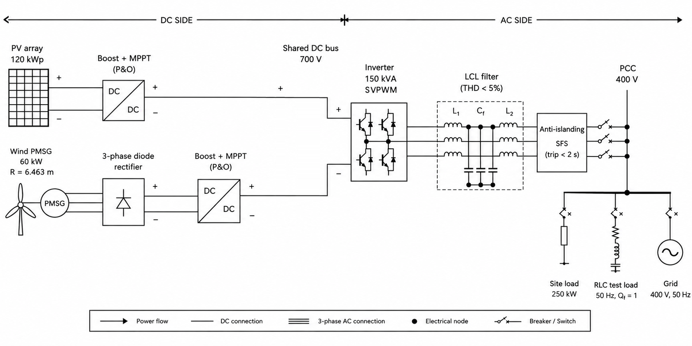
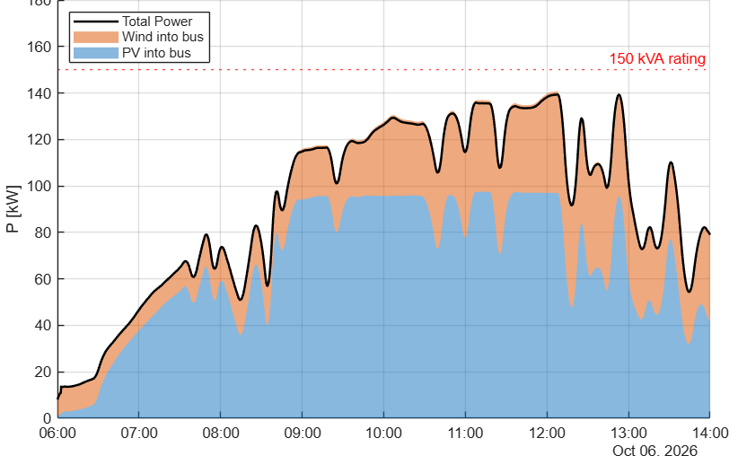

I combined my teammates’ PV, wind, inverter, PLL and anti-islanding models into one 150 kVA Simulink plant on a shared 700 V DC bus, and built the test harness of nine scenarios, including a grid fault. All nine passed.
1.44%
Grid current THD at 149 kW65.4ms
To detect an island and trip0.17s
Power back after a 220 ms grid fault
